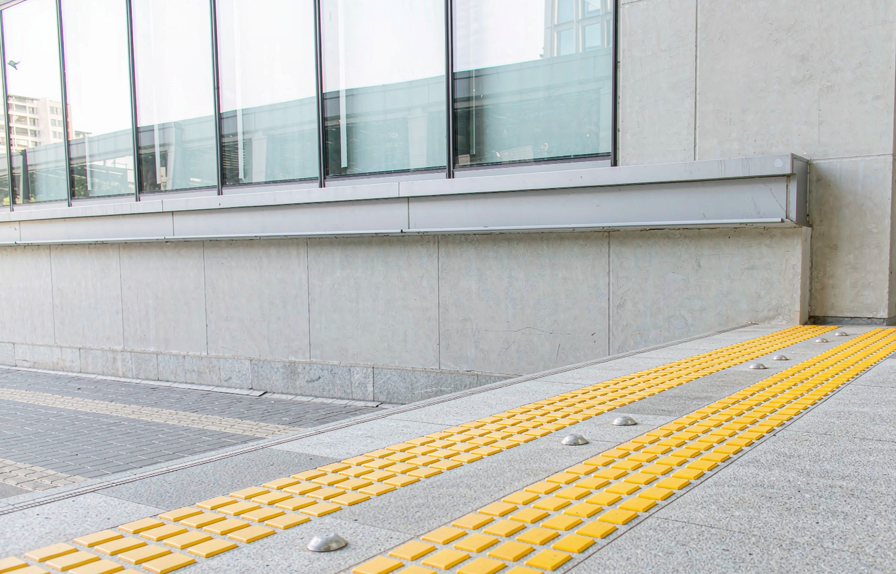
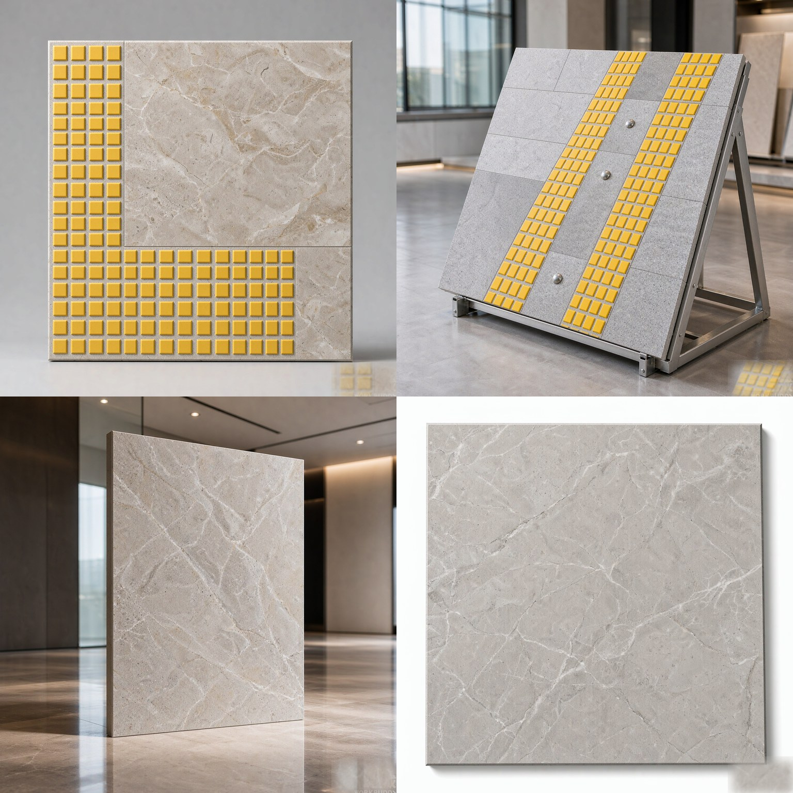
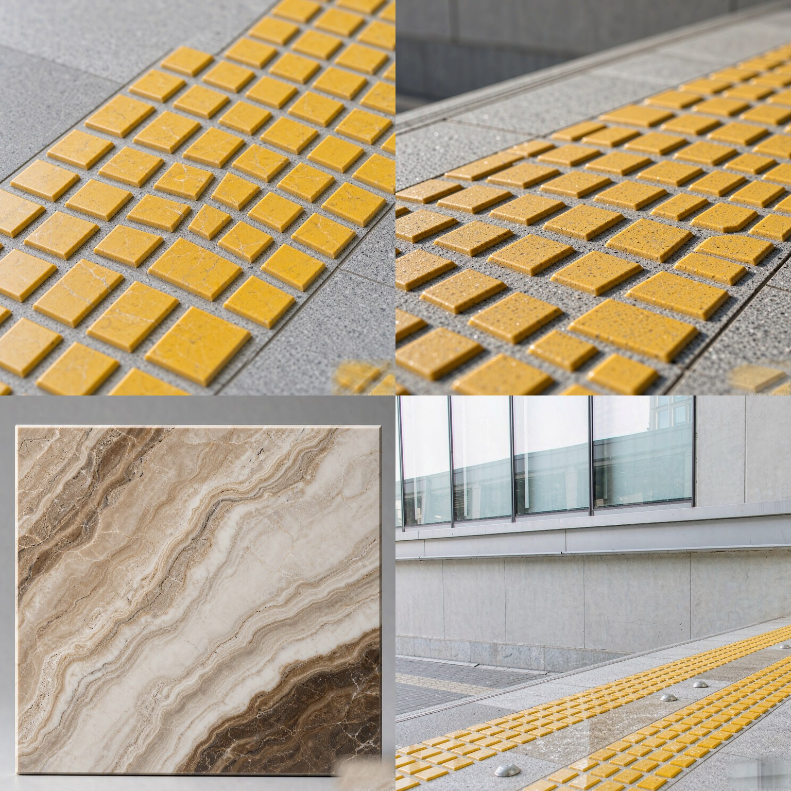
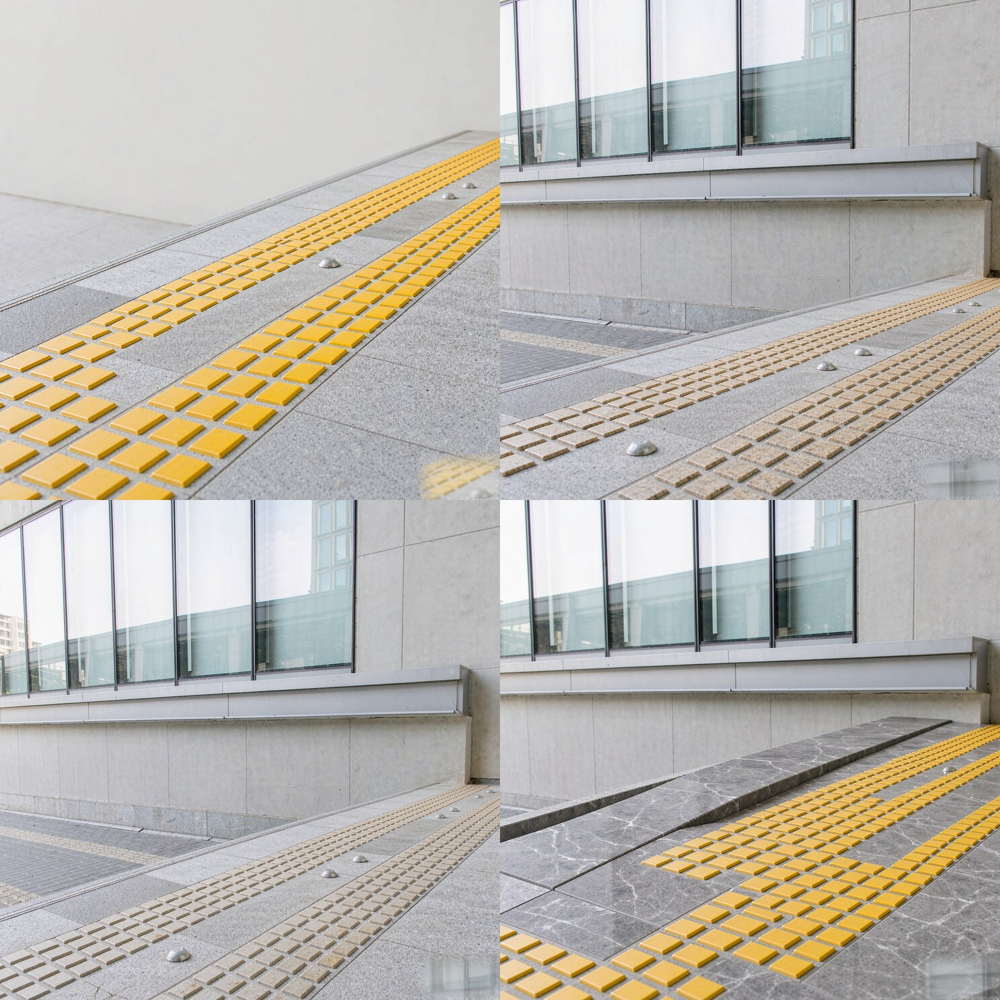

工程石材品種系列
導盲磚（盲人磚）
Tactile Paving Stone
以條紋（行進／方向）與圓點（警示／停止）兩種標準紋樣構成的觸覺引導鋪裝，300×300mm 或 300×600mm、厚 30–50mm。覆蓋直行、轉角、路口接續與坡道節點，可與一般地鋪石同批同色自然銜接。
品種詳解 · 工程石材品種系列
導盲磚（盲人磚） · 樣本、技術參數與應用
導盲磚（盲人磚）以花崗巖（麻石）製作觸覺引導鋪裝，透過條紋（行進／方向）磚與圓點（警示／停止）磚兩種標準紋樣，讓視障人士以手杖與腳感辨識行進方向與停靠位置。常用規格為 300×300mm 與 300×600mm，厚度 30–50mm，紋樣條紋寬度與凸起高度依沿用的無障礙設計指引控制，確保辨識度一致。產品覆蓋直行引導、轉角轉向、路口接續、坡道與臨車行邊界等節點，可與一般地鋪石同批同色供應，使導盲帶與周邊鋪裝自然銜接。麻石耐磨不起翹，長期踩踏不變形，是公共工程無障礙動線的常用製品。





產品名錄（四項對照） Product Nomenclature
| 產品內地名稱 | 盲道石導盲磚（盲人磚） · Tactile Paving Stone |
|---|---|
| 香港本地行業叫法 | 導盲磚（盲人磚）Tactile Paving Stone |
| 外貿英文名稱 | Tactile Paving Stone盲道石 |
| 簡短商用產品簡介 | 花崗巖（麻石）觸覺引導鋪裝，含條紋導盲（行進）與圓點警示（停止），用於人行道、路口與公共設施，符合無障礙設計，雨後防滑、耐磨抗壓。 |
材料與工藝 Material & Craftsmanship
以花崗巖（麻石）板材為底，以數控機床銑出條紋或圓點凸紋，紋樣深度與間距一致，凸起邊緣倒圓角以避免絆腳。條紋與圓點的高度差經控制，讓輪椅與手推車可順暢通過，同時保留足夠觸感。
由於導盲磚需被輪椅與行人長期碾壓，選料須質地均勻、無隱裂；建議選 40–50mm 厚板並以水泥砂漿滿漿坐漿，避免空鼓。顏色可選自然灰、芝麻灰或經染色的高辨識黃色（黃色僅作標示，須符合當地指引對比度要求）。
技術參數 Technical Data
基本資料 Basic Information
石材類型
Stone Type天然花崗巖（麻石）
產地
Origin中國福建／山東礦區（可選印度）
色系
Colour Family機切面＋凸起導盲紋
尺寸規格 Dimensions & Sizing
製品常規尺寸
Standard Product Size300×300×50mm（條狀／點狀）
常規厚度
Available Thickness50mm
尺寸公差
Dimensional Tolerance±2.0mm（機切面）
物理性能 Physical Performance
密度（g/cm³）
Density2.68
吸水率（%）
Water Absorption0.37
抗壓強度（MPa）
Compressive Strength176
抗彎強度（MPa）
Flexural Strength13.0
莫氏硬度
Mohs Hardness6.0
耐磨性
Abrasion Resistance≤ 8.5 mm
防滑等級
Slip ResistanceR12（BS EN 14231）
耐凍融
Frost Resistance50 次凍融循環合格（BS EN 12371）
放射性等級
Radioactivity ClassA 類 Class A（GB 6566）
加工與安裝 Fabrication & Installation
安裝方式
Installation Method水泥砂漿濕鋪／膨脹螺栓固定
接縫處理
Joint Treatment5–8mm 水泥砂漿勾縫
承重／承載等級
Load Rating行人步道
認證與保養 Certification & Care
認證標準
CertificationISO 9001 · BS EN 1341／1342／1343 · GB 6566 A 類
執行標準
Applicable StandardISO 23599 · 香港運輸署《行人環境》指引
保養週期
Maintenance Cycle高壓水洗；每 24 個月檢查勾縫
品質保固
Warranty戶外耐候保固 15 年
商務條款 Commercial Terms
價格單位
Price UnitHK$／件
最小訂購量
Minimum Order Quantity50 件
供貨週期
Lead Time15–25 個工作天（訂造 30–40 天）
包裝方式
Packaging木托盤纏繞膜，每托 40–60 件
* 以上數據為典型值範圍，具體批次可能略有差異。如需特定批次檢測報告，請聯絡我們。
應用場景 Application Scenarios
人行道
人行道上的條紋式行進導引
路口與轉角
路口與轉角的圓點停止警示
公共設施
公共設施的無障礙連續動線
車站與口岸
車站與口岸的安全引導帶
校園與醫院
校園與醫院內守護視障人士
公園步道
公園步道的連續引導路線
可選表面處理工藝
常見規格 Common Sizes
300×300 mm（條紋/圓點）；厚 20
30 mm
30 mm
表面處理 Finish
火燒面 Flamed
荔枝面 Bush-hammered
模具成型 Moulded
荔枝面 Bush-hammered
模具成型 Moulded
系列產品一覽（10 款） Product Range · 10 Types
| 1 | 條紋導盲磚條紋導盲磚 · Directional Bar | 條紋紋樣，用作直行方向導引 |
| 2 | 圓點警示磚圓點警示磚 · Warning Dot | 圓點紋樣，用作停止或轉向警示 |
| 3 | 黃色警示磚黃色警示磚 · Yellow Warning | 高辨識黃色警示磚，用於關鍵節點 |
| 4 | 灰色導盲磚灰色導盲磚 · Grey Guide | 低調灰色導盲磚，與地鋪石自然銜接 |
| 5 | 帶坡磚帶坡磚 · Ramp Tile | 帶坡磚，配合無障礙坡道導引 |
| 6 | 轉角磚轉角磚 · Corner Tile | 轉角轉向磚，對應路徑改變方向 |
| 7 | 路口磚路口磚 · Junction Tile | 路口接續磚，銜接斑馬線起始位 |
| 8 | 厚板導盲厚板導盲 · Thick Guide | 加厚導盲板，用於臨車行區邊界 |
| 9 | 異形收邊異形收邊 · Cut Edge | 異形收邊磚，處理弧形與收口位 |
| 10 | 不鏽鋼組合鋼石組合 · Steel+Stone | 石面嵌不鏽鋼條，輔助視覺辨識 |
獲取專屬方案
對工程專供系列感興趣？填寫以下資訊，我們的石材顧問將在24小時內與您聯繫，為您提供專屬採購方案。
🚀 24小時內回覆
🔒 資訊嚴格保密
🏆 68道品質檢測
📦 免費提供樣板